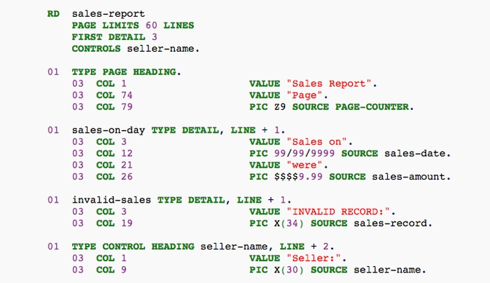
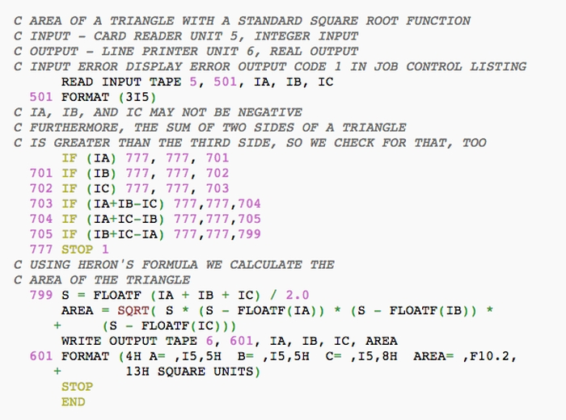

Inicio da Década de 1950 - Desenvolvimento da Linguagem de Programação
A década de 1950 foi fundamental para o desenvolvimento da programação, com a criação de linguagens como COBOL e FORTRAN. Essas linguagens, mais próximas da linguagem humana do que o código de máquina, permitiram que mais pessoas pudessem programar e impulsionaram a criação de softwares cada vez mais complexos.
- Linguagem COBOL (Common Business Oriented Language) - é uma linguagem compilada, flexível e segura.

- Linguagem FORTRAN (Formula Translation) - projetada para cálculos científicos e de engenharia, com esta foram introduzidos conceitos como variáveis, loops e sub-rotinas.
